The layers represent the data, what the graph is all about. Everything else–the scales, coordinate system, faceting, and themes–are accessories to make the data clear and comprehensible. Therefore it is essential to get the data right. Even if everything else looks perfect, if the data is wrong the graph is worthless. Each layer consists of five components: 1) data, 2) aesthetic mapping, 3) geom, 4) stat, and 5) position. Most of the time you can rely on the defaults for 4) stat and 5) position, so we’ll start with the first three components, all of which are required.
3.1 Data
ggplot2 is designed to work only with data frames. That means no vectors, matrices, tables, or lists. If your data is is not in data frame form, you’ll need to convert it to a data frame first. How can you tell if you have the right format? Use class to check:
As long as data.frame is one of the classes returned, you’re good to go. So faithful and CO2, two of the built-in base R datasets would work, as would diamonds a dataset that comes with the ggplot2 package. Note that class(diamonds) also returns tbl_df and tbl indications that diamonds is also a tibble, the tidyverse version of a data frame. We’ll return to this topic later. Neither Titanic nor Seatbelts is a data frame so both would produce errors if we tried to create graphs from this data with ggplot2 without converting the data. If you read data from a file with read.csv(), read_csv(), or other functions for reading tabular data, it will be a data.frame.
3.2 Geoms
Geoms are the heart and soul of graphics made with ggplot2. A “geom” is short-hand for geometric object, the shapes that represent. We will begin with six commonly used geoms, shown below.
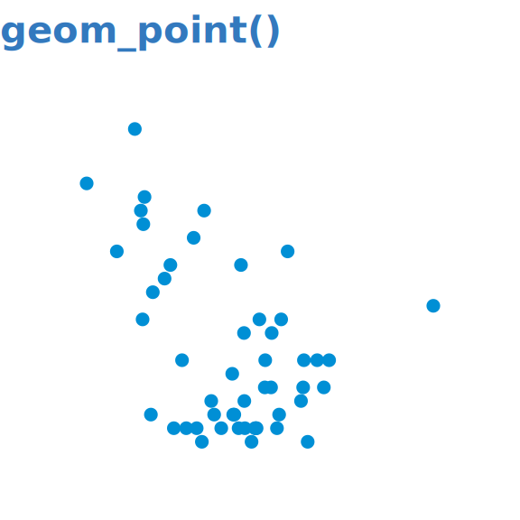
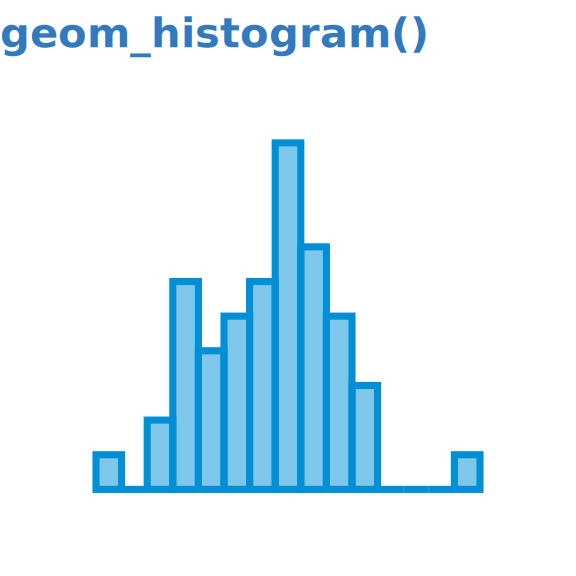
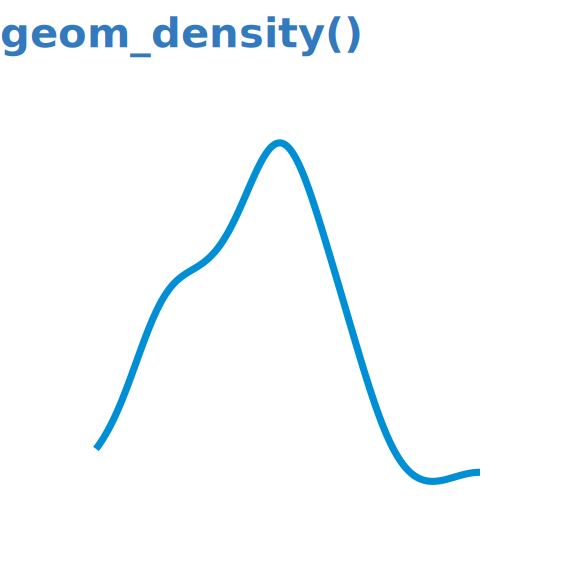
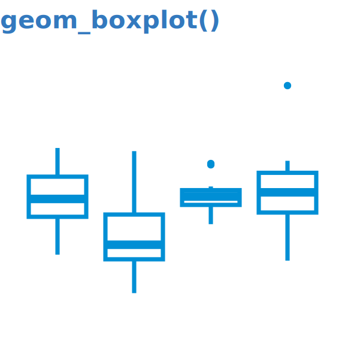
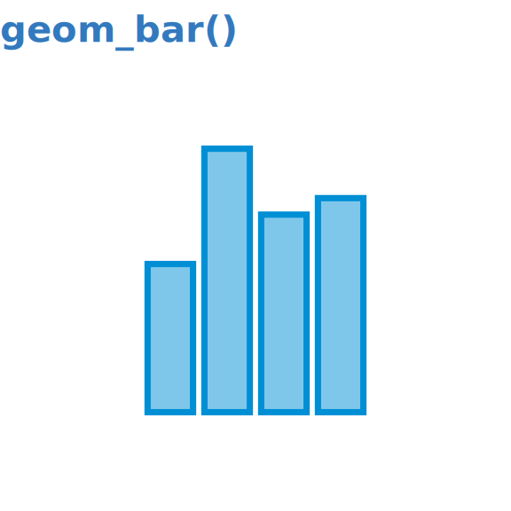
Once these geoms are mastered, the hope is that it will be easy to learn additional geoms as you’ll know how they work. (Did you know that geom_bar() and geom_col() produce the same visual? We’ll discuss why later.)
3.3 Aesthetic mappings
An aesthetic mapping relates visual properties with variables (also called features or columns) in the data. There are a limited number of aesthetic mappings; some of the most common are x, y, color, and fill. For example, to create the following scatterplot, we map x to Income and y to Illiteracy:
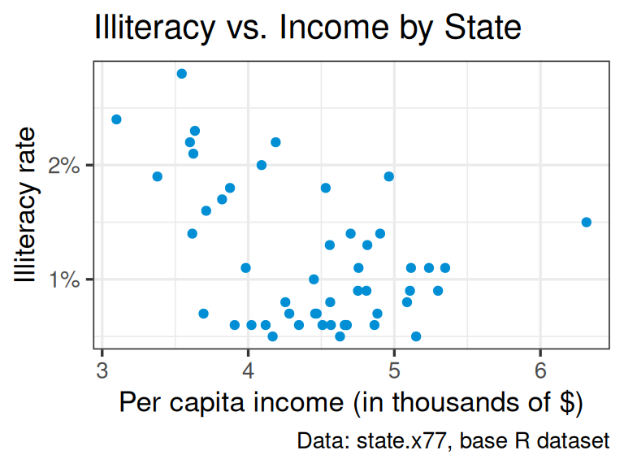
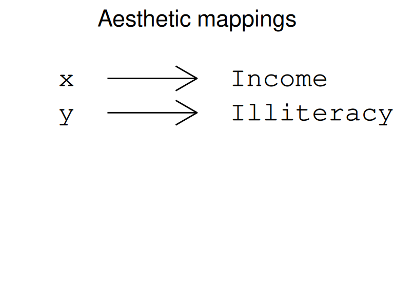
For each geom, there is a small set of required mappings and a much larger set of optional mappings. The catch is that sometimes it may not be clear which mappings are required. In this guide we will always make a special point of indicating the required mappings, as this can be a stumbling block for beginners.
Tip
Whenever you learn a new geom, pay careful attention to the required mappings.
Let’s consider an example. geom_histogram() has one required mapping x or y. A standard histogram with vertical bars is produced by mapping x though there may be circumstances in which a y mapping is desired, for example to create a population pyramid.
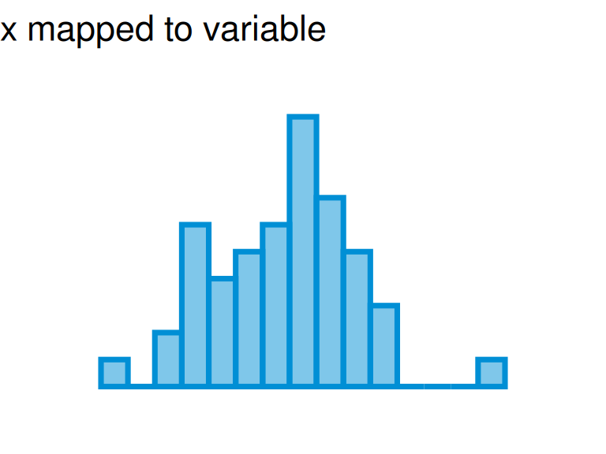
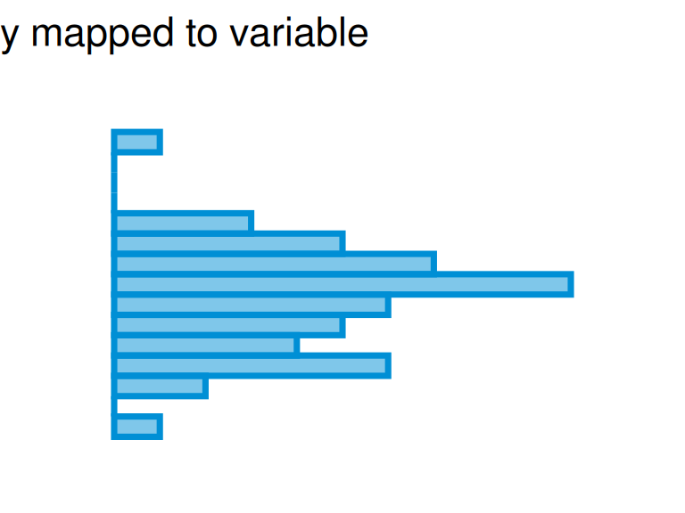
3.4 Continuous vs. discrete mappings
Don’t skip this section.
It’s really important. 🤓
In addition to knowing the required mappings, it is critical to know whether the the visual component (x, y, fill, color, etc.) must be mapped to a continuous (think numerical) variable, discrete (think categorical) variable, or either one. If you’re working with columns in a data frame you will likely know their data types, but there are times when you’ll need to check that the data types are correct. There are many ways to check; depending on the method, continuous columns will be marked as numeric, num, dbl, integer, or dbl. Discrete mappings will appear as: factor, character, chr, Factor, fct, Ord.factor, ord, logi, logical, lgl, to indicate that the variable is a character, factor, or logical. (The differences among the terms within each group are not important at the moment.)
Let’s consider the built-in dataset CO2. Try running the code shown below for practice.
Recall that we first must be sure that we’re working with a data frame:
Note that both conc and uptake have data type num which is continuous, while Plant, Type and Treatment have data types Factor or Ord.factor which are discrete.
Another method is to use glimpse() from the dplyr package, which is similar to str() but shows more data and less attribute information:
We see that glimpse() labels the continuous (numeric) columns as <dbl> rather than num and the discrete columns as <fct> and <ord>. Again, for our purposes, this distinction isn’t important.
Tip
View() and head() – common methods for looking at data – do NOT show data types so should not be used in this situation.
3.4.1 An example
Suppose we wish to draw histograms of the continuous variables in the CO2 dataset. Since histogram represents the distribution of a numerical variable and has no meaning for categorical variables, the mapping must be to a numerical variable. Our choices therefore are conc and uptake:
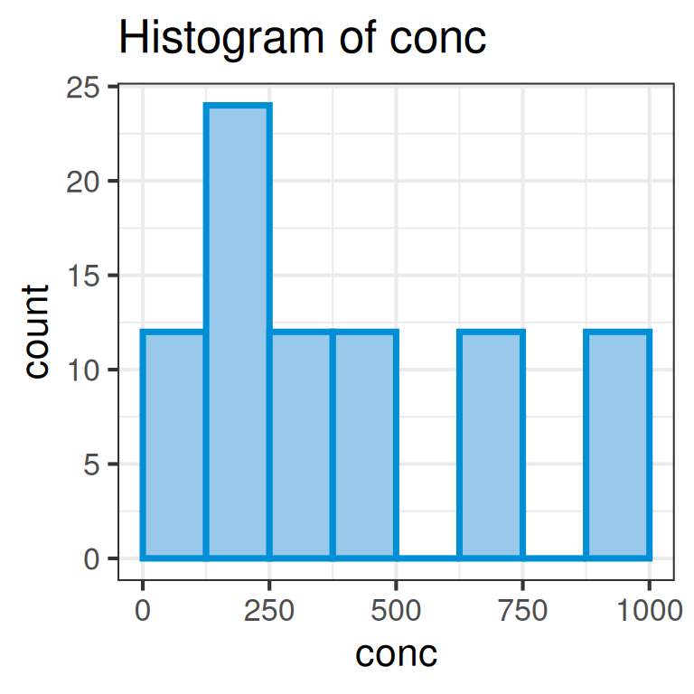
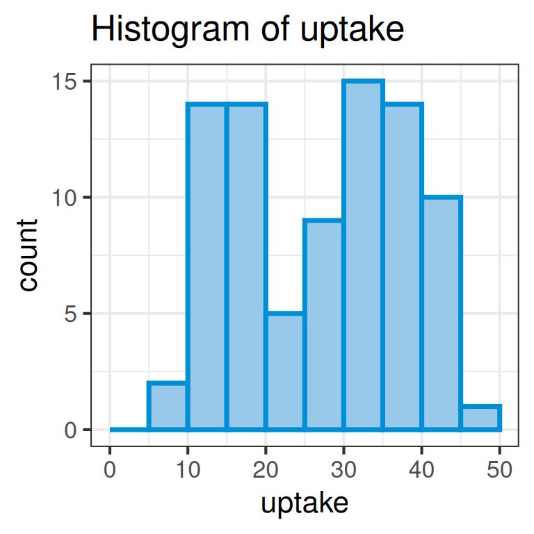
If we try to try, though, to draw a histogram of a discrete variable, such as Plant, we’ll get an error:
Error in `geom_histogram()`:
! Problem while computing stat.
ℹ Error occurred in the 1st layer.
Caused by error in `setup_params()`:
! `stat_bin()` requires a continuous x aesthetic.
✖ the x aesthetic is discrete.
ℹ Perhaps you want `stat="count"`?
We’re ready now to combine the three essentials of a layer–data, an aesthetic mapping, and a geom–to create our first plot.
3.5 Our first plot
To review we said that plots are made up of layers, scales, coordinate systems, faceting, and themes. We begin by focusing on the layers and relying on defaults for all the rest. Each layer we said is composed of data, aesthetic mappings, geoms, stat and position. We will focus on data, aesthetic mappings, and geoms, and rely on defaults for stat and position.
Tip
Always start with the geom and ask yourself: what are the required aesthetic mappings?
Let’s make a histogram using the built-in dataset faithful. We confirm that it’s a data frame and then determine that both variables are continuous (type num) and therefore either would work with geom_histogram(), which as we said requires continuous aesthetic mappings:
class(faithful)
[1] "data.frame"
str(faithful)
'data.frame': 272 obs. of 2 variables:
$ eruptions: num 3.6 1.8 3.33 2.28 4.53 ...
$ waiting : num 79 54 74 62 85 55 88 85 51 85 ...
Let’s draw a histogram with the waiting variable. We now have everything we need:
data: faithful
mapping: x ➞ waiting
geom: geom_histogram()
All that’s left is to convert this to ggplot2 code. Typically the data and mapping are indicated in the call to ggplot() which initializes the plot, and then we add in the geom.
`stat_bin()` using `bins = 30`. Pick better value with `binwidth`.
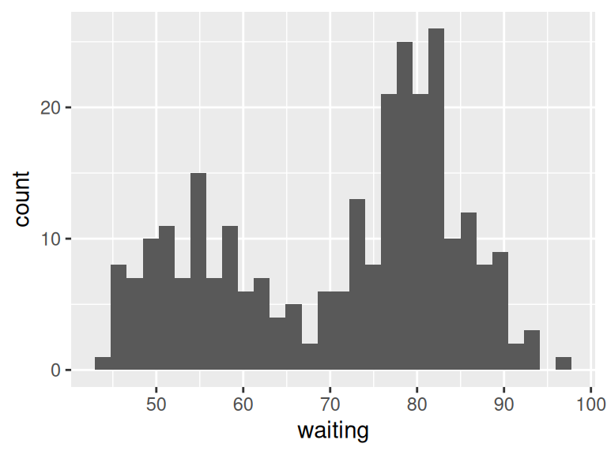
And we have our first plot! A few things to note:
ggplot2 tries its best to teach you how to create good graphs.1 In this case, it is communicating that the default number of bins for histograms drawn with ggplot2 is 30. Rather than rely on the default, you should try different values for binwidth = (or bins = or breaks =) to find one that best captures the shape of the distribution.
You cannot start a new line with +. It is good practice to start a new line after every +.
This plot isn’t very pretty. It’s very tempting to change the colors, font size, etc. but we’re going to save that for later.
There’s a long history in R, dating back to the development of its predecessor, S, of following best practices for creating statistic graphics. Many of the help files for base R and ggplot2 plotting functions contain references to research by William Cleveland and others on creating effective graphs. (add references)↩︎